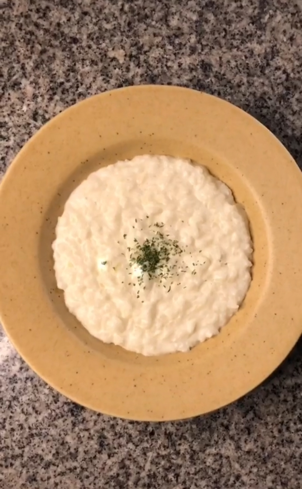

Bahan :
- Beras
- Bawang bombay
- Susu
- Dashi bubuk
- Bubuk bawang putih
- Garam
Tata cara :
- Siapkan beras yang udh di cuci.
- Iris bawang bombai.
- camprkan bawang bombai yang udh di iris tadi dengan beras yang udah di cuci.
- Tuangkan susu sesuai takaran untuk buat bubur.
- Tuangkan dashi bubuk, bubuk bawang putih dan garam, lalu aduk hingga merata.
- Terakhir masak menggunakan rice cooker.